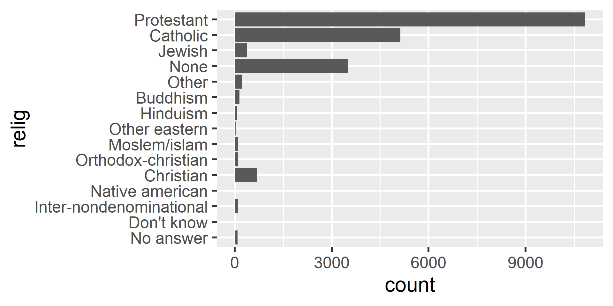

# Raw data as numbers (where 1=Female, 2=Male and 11 is a typo)
sex <- c(2, 1, 1, 2, 11)Foundations of
Data Science
Spring 2026 | Data 2 (399)
Jeffrey M. Girard | Lecture 12b

Roadmap
Understand the difference between character strings and factors
Control the order of categorical data in plots and tables
Recode, collapse, and “lump” factor levels to simplify messy data
Creating Factors
What are Factors?
Question: Why not just use strings for categories?
Factors are used for categorical variables with a fixed and known set of possible values (levels)
Each level can also have a nice display label
Unlike strings, factors allow you to control the order of categories and check for invalid values
- We use the {forcats} package (part of the {tidyverse}) to work with them
- Most functions in this package start with
fct_
Creating Factors
Question: How do we convert raw data into a factor?
Factors vs. Strings
Question: What happens if we don’t specify levels?
[1] Jan Feb Feb Jan Apr Mar Apr
Levels: Apr Feb Jan MarA Safer Alternative
Question: Are there better tools for creating factors than base R?
The {forcats} package provides fct(). It is safer than factor() because it errors if you include a value not in the levels, and it orders by first appearance.
[1] Dec Apr <NA> Mar
Levels: Jan Feb Mar Apr DecError in `fct()`:
! All values of `x` must appear in `levels` or `na`
ℹ Missing level: "Jam"Ordering Levels
Introducing the GSS Dataset
To explore reordering and modifying factors, we will use the gss_cat dataset. This is a sample of data from the General Social Survey.
Rows: 21,483
Columns: 9
$ year <int> 2000, 2000, 2000, 2000, 2000, 2000, 2000, 2000, 2000, 2000, 20…
$ marital <fct> Never married, Divorced, Widowed, Never married, Divorced, Mar…
$ age <int> 26, 48, 67, 39, 25, 25, 36, 44, 44, 47, 53, 52, 52, 51, 52, 40…
$ race <fct> White, White, White, White, White, White, White, White, White,…
$ rincome <fct> $8000 to 9999, $8000 to 9999, Not applicable, Not applicable, …
$ partyid <fct> "Ind,near rep", "Not str republican", "Independent", "Ind,near…
$ relig <fct> Protestant, Protestant, Protestant, Orthodox-christian, None, …
$ denom <fct> "Southern baptist", "Baptist-dk which", "No denomination", "No…
$ tvhours <int> 12, NA, 2, 4, 1, NA, 3, NA, 0, 3, 2, NA, 1, NA, 1, 7, NA, 3, 3…Order by Appearance
Question: Can I order my levels by which appear first in the data?
Order by Frequency
Question: How can I order my levels by their number of observations?
Reversing Order
Question: Can I quickly reverse the order of my factors?
Creating a Summary Table
Let’s calculate the average age for each marital status group to play with.
Order by Value
Order by another variable in the dataset
Manual Reordering
Manually bring one or more variables to the front / bottom
Modifying Levels
Why Modify Levels?
- Sometimes the data you inherit has messy categories
- You might need to combine small, specific groups into larger, more general ones for analysis
- Categorical variables with too many levels can cause issues
- Modifying levels allows us to tidy up before plotting or modeling
Recoding Levels
Question: How do we rename levels to make them clearer?
gss_cat |>
mutate(partyid = fct_recode(partyid,
"rep, strong" = "Strong republican",
"rep, weak" = "Not str republican",
"ind, rep" = "Ind,near rep",
"ind" = "Independent",
"ind, dem" = "Ind,near dem",
"dem, weak" = "Not str democrat",
"dem, strong" = "Strong democrat"
)) |>
count(partyid) |>
print(n = 10)# A tibble: 10 × 2
partyid n
<fct> <int>
1 No answer 154
2 Don't know 1
3 Other party 393
4 rep, strong 2314
5 rep, weak 3032
6 ind, rep 1791
7 ind 4119
8 ind, dem 2499
9 dem, weak 3690
10 dem, strong 3490Collapsing Levels
Question: How do we group many small categories into a few large ones?
gss_cat |>
mutate(party_simple = fct_collapse(partyid,
other = c("No answer", "Don't know", "Other party"),
rep = c("Strong republican", "Not str republican"),
ind = c("Ind,near rep", "Independent", "Ind,near dem"),
dem = c("Not str democrat", "Strong democrat")
)) |>
count(party_simple, sort = TRUE)# A tibble: 4 × 2
party_simple n
<fct> <int>
1 ind 8409
2 dem 7180
3 rep 5346
4 other 548Many Small Groups

Lumping Small Groups
Question: What if we only care about the most common categories?
Other Ways to Lump
Question: What if I want to lump based on proportions rather than a fixed count?